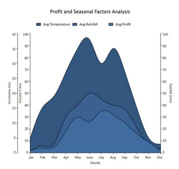

Essential Chart for WPF enables users to retain the axis position of the primary and secondary axis when multiple axes are added in a chart area.
Adding Support for Retaining Axis Position
Set the IsRetainAxisPosition property to True to add axes in the order they are added to the chart area. The following code illustrates this.
|
[Xaml]
<syncfusion:ChartArea IsRetainAxisPosition="True"> |
When the code runs, the following output displays.
Figure 202: IsRetainAxisPosition is True.
Set IsRetainAxisPosition is False to add axes in reverse order.

Figure 203: IsRetainAxisPosition is False
Table 141: Property Details
|
Name of Property |
Description |
Type of Property
|
Value It Accepts
|
Property Syntax |
|
IsRetainAxisPosition |
Determines the order of arranging the multiple axes. |
Dependency |
Bool or True/False. |
IsRetainAxisPosition="True" |